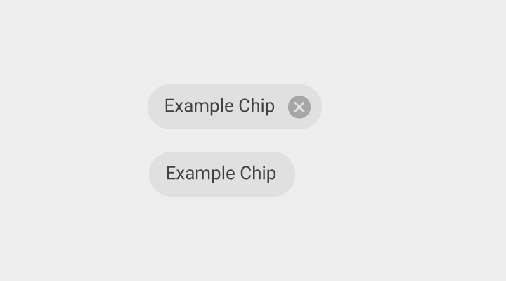
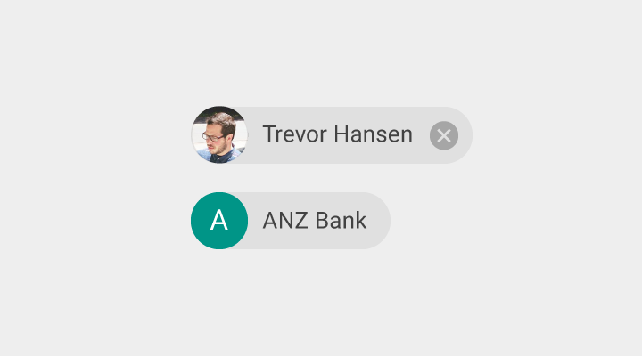

칩은 사진, 짧은 제목, 그리고 요약 정보가 들어 있을 것입니다.
칩의 유형
칩은 자유로운 형태의 텍스트, 미리 정의된 텍스트, 규칙, 또는 연락처를 포함하는 다양한 유형의 개체를 위해 사용될 수 있습니다. 칩은 또한 아이콘이 들어 있을 것입니다.

텍스트가 있는 칩
칩 레이블
- 13sp Roboto Regular
- 87% 검정

텍스트와 아이콘이 있는 칩